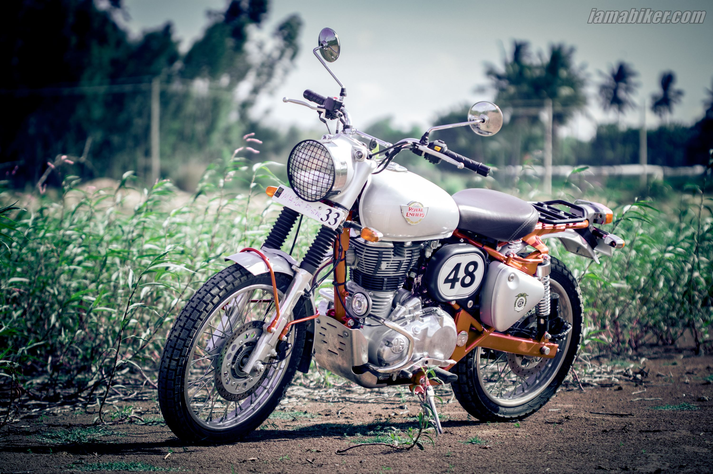

Welcome to Royal Rider Club
Royal Enfield is an Indian multinational motorcycle manufacturing company headquartered in Chennai, Tamil Nadu, India. It has a tag of "the oldest global motorcycle brand in continuous production"[3] manufactured in factories in Chennai in India. Licensed from Royal Enfield by the indigenous Indian Madras Motors, it is now a subsidiary of Eicher Motors Limited, an Indian automaker.[4] The company makes classic-looking motorcycles including the Royal Enfield Bullet, Classic 350, Meteor 350, Classic 500, Interceptor 650, Continental and many more. Royal Enfield also make adventurous and offroading motorcycles like Royal Enfield Himalayan. Their motorcycles are equipped with single-cylinder and twin-cylinder engines.[5] First produced in 1901, Royal Enfield is the oldest motorcycle brand in the world still in production, with the Bullet model enjoying the longest motorcycle production run of all time